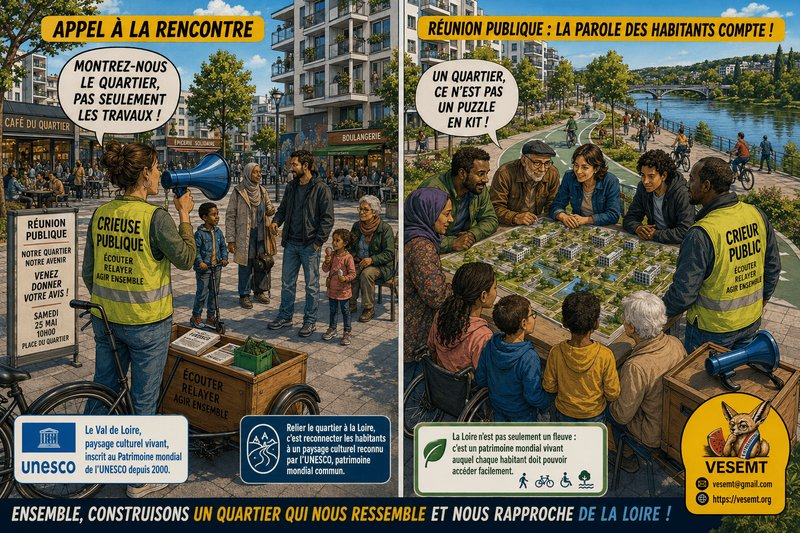

- « Quand on construit un puzzle, on montre d’abord la photo de la boîte avant de distribuer les pièces ! »

La réunion publique organisée hier (03 juin 2026) à la Rabaterie a confirmé une chose : les habitants aiment leur quartier. Ils s’intéressent à son avenir. Ils veulent comprendre où il va.
Mais elle a aussi confirmé autre chose : la concertation ressemble de plus en plus à une collection de dossiers techniques… et de moins en moins à un projet de quartier. Et malheureusement peu se dépacent
Le débat n’est pas de savoir si les projets présentés sont bons ou mauvais.
La vraie question est beaucoup plus simple : où est la vision d’ensemble partagée?
-
Aujourd’hui, on présente un morceau.
-
Demain, un autre.
-
Puis un troisième.
- À la fin, chacun connaît sa pièce… mais personne ne voit le puzzle. car si on n’a pas la photo d’ensemble on n’aura jamais de compte-rendu non plus.
Hier, les habitants ont découvert les futurs espaces extérieurs du centre commercial, après avoir déjà découvert ceux de la Chassepinière.
Deux projets intéressants : Mais qui a expliqué comment ils fonctionneraient ensemble ?
-
Comment circulera-t-on à pied ?
-
Comment passera-t-on d’un quartier à l’autre à vélo ?
-
Où seront les continuités paysagères ?
-
Comment les enfants rejoindront-ils les équipements ?
-
Et surtout.. Pas de réponse aussi précise que le reste à la question posée du « comment franchira-t-on enfin la barrière que représente aujourd’hui la route départementale pour rejoindre la Loire (dans sa partie classée au Patrimoine mondial de l’UNESCO depuis le 30 novembre 2000), alors même que l’on nous parle de mobilités douces ? »
Une mobilité douce qui s’arrête devant une départementale, c’est un peu comme un bateau qui s’arrête au bord de l’eau…
La concertation ne devrait pas seulement montrer ce qui sera construit. Elle devrait expliquer comment tout cela vivra ensemble demain.
Parce qu’un quartier, ce n’est pas une addition de chantiers. : C’est un lieu de vie.
86 places autour du Centre Commercial… parce que c’était écrit : Autre moment étonnant de la soirée.
À propos des 86 places de stationnement, la réponse apportée fut, en résumé : « C’était dans la commande. »
Une réponse qui laisse songeur.: Car une commande n’est pas forcément un projet.
Avant de décider qu’il faut exactement 86 places, ne faudrait-il pas répondre à quelques questions ?
-
Quels commerces accueilleront demain ce centre ?
-
Quels services seront réellement présents ?
-
Quelle fréquentation est attendue ?
-
Quelle place souhaite-t-on donner aux piétons, aux vélos et aux transports en commun ?
Décider du nombre de places avant de connaître les usages, c’est un peu comme acheter les chaussures avant de savoir qui va les porter.
Les habitants n’attendent pas des diapositives. Ils attendent une histoire. Voilà sans doute le vrai problème.
Les habitants ne viennent pas pour regarder une succession de plans. Ils viennent pour comprendre où va leur quartier. Des réunions et des préprojets ils en ont vus mais le quotidien, lui ne bouge pas, voire se dégrade !
Ils veulent connaître la destination qui les feraient espérer, pas seulement les travaux.
Car si l’on ne raconte jamais le projet dans son ensemble, il ne faut pas s’étonner que les salles soient parfois à moitié vides.
Quand on ne montre que les pièces, il ne faut pas être surpris que personne ne reconnaisse le puzzle.
La participation ne se décrète pas. Elle s’organise.
Cette réflexion rejoint directement la proposition que nous formulons aujourd’hui : créer un réseau de Crieurs Publics – Médiateurs sociaux pour et avec les quartiers prioritaires.
Ce dispositif s’inscrirait dans une volonté de réintroduire de la proximité dans la circulation de l’information dasn les quartiers de la Métropole. Contrairement au crieur public traditionnel, limité à la diffusion descendante d’annonces, cette nouvelle figure remplit une fonction bidirectionnelle : elle transmet l’information institutionnelle tout en recueillant la parole des habitants, pour leur apporter des réponses concrètes.
Cette innovation (déjà testée dans d’autres villes) répond à une double crise souvent qualifiée d’« institutionnelle », nationalement. D’un côté, une partie de la population exprime un sentiment de non-écoute des “Elites” , résumée par l’idée récurrente selon laquelle « on ne nous écoute pas ». De l’autre, les élus locaux soulignent la difficulté à identifier des interlocuteurs représentatifs en dehors des cadres institutionnels habituels….. Et il n’y a aucune raison de chercher à dire qu’à Saint-Pierre-des-Corps cela est différent.
Dans ce contexte, le crieur public-médiateur social joue un rôle d’interface. Présent physiquement dans les espaces de vie quotidienne (marchés, quartiers, lieux publics), il facilite le dialogue en rendant l’information plus humaine et en favorisant des échanges directs. Il contribue ainsi à restaurer la confiance et à renforcer le lien entre les habitants et les pouvoirs publics.
En définitive, la réinvention du crieur public sous la forme d’un médiateur social illustre une évolution d’une pratique de gouvernance locale, davantage orientée vers l’écoute, la participation et la co-construction des projets.
Car la participation des habitants ne peut pas reposer uniquement sur quelques réunions publiques.
Encore faut-il que les habitants soient informés dans de bonnes conditions.
L’exemple récent de Val Touraine Habitat, pour un autre Quartier Politique de la Ville (La Galboisière/Gare) est révélateur.
Un courrier daté du 25 juin invitait les habitants à une réunion prévue le 6 juillet… …mais il n’est arrivé dans certaines boîtes aux lettres que hier.
À ce rythme-là, on finit par inviter les habitants… après la réunion !
On ne construit pas une démocratie locale avec des convocations de dernière minute.
La loi du 21 février 2014 rappelle pourtant que la participation des habitants est un principe fondamental du renouvellement urbain.
Mais pour participer, encore faut-il que les conditions existent.
Les quartiers populaires ont besoin d’une concertation permanente. Pas d’une concertation épisodique.
-
Dans les quartiers populaires, les habitants se déplacent souvent moins qu’ailleurs.
-
Ce n’est pas un manque d’intérêt.
-
C’est une réalité sociale.
-
Ce n’est donc pas aux habitants de courir après la concertation.
-
C’est à la concertation d’aller vers les habitants.
C’est précisément le rôle que pourraient jouer des Crieurs Publics – Médiateurs sociaux, mais aussi d’autres outils mutualisés entre tous les quartiers Politique de la Ville de Tours Métropole Val de Loire : kiosques citoyens, vélos de la participation, maquettes mobiles, permanences itinérantes, expositions de rue, cartes interactives…
Autant de moyens simples pour rendre la participation permanente, visible et accessible. :
-
Pas seulement durant la réunion, mais au quotidien,
-
Pas de l’information descendante, mais des remontées de terrain et des réponses concrètes,
-
Et donc « Échanger » en toute égalité sur un ordre du jour écrit ensemble
Une ambition à retrouver
La concertation doit redevenir ce qu’elle n’aurait jamais dû cesser d’être : non pas la présentation d’opérations successives…
…mais le partage d’une vision collective de l’avenir des quartiers.
Les habitants ne demandent pas seulement : « Que va-t-on construire ? »
Ils demandent aussi : « Où va notre quartier ? » « Comment y vivrons-nous demain ? »
« Quelle sera notre place dans cette histoire ? »
Et si la participation est plus difficile dans les quartiers populaires… …ce n’est pas une raison pour en faire moins. C’est exactement la raison d’en faire davantage, d’expérimenter de nouveaux outils… et d’y mettre enfin les moyens.
« Les techniciens savent tout dessiner (et c’est heureux)… sauf parfois le chemin qui mène aux habitants. »
Il est peut-être temps d’inverser le plan : commencer par les habitants, et construire le quartier avec eux
Et à chaque étape faire un compte-rendu en permanence absent et pourtant nécessaire pour comprendre ce puzzle! »
À Saint-Pierre-des-Corps, le 03/0/07/2026
Comité populaire et néanmoins bienveillant de Vivre (surtout) Ensemble et (si possible) Solidaires en Métropole Tourangelle (VESEMT) ;
Commentaires